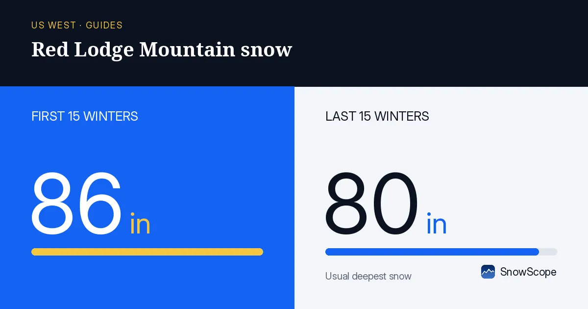
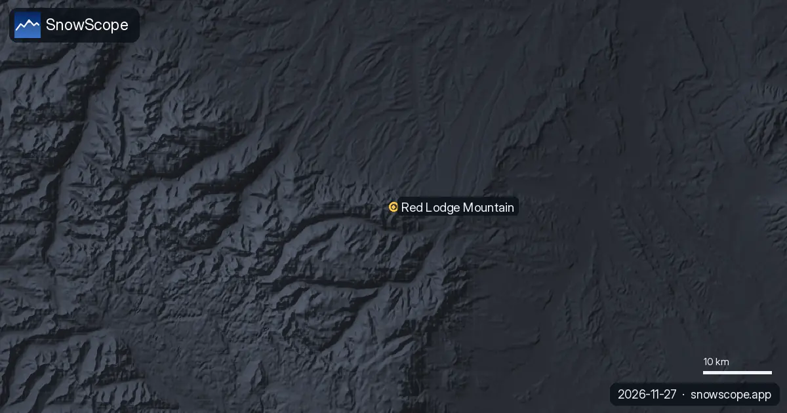

Red Lodge Mountain snow: 14 in (36 cm) up top and 5 in (13 cm) coming Saturday, but the base is far behind
Red Lodge Mountain has 14 in (36 cm) of snow on its upper slopes on November 27, 2026, and a shot of new snow is on the way: about 5 in (13 cm) on Saturday. Lower down the picture is thin: at 8,235 ft (2,510 m) the pack is 3 in (8 cm), against 23 in (59 cm) in a normal late November.
See the live snow forecast for Red Lodge Mountain in the SnowScope appSnow depth, powder alerts and the 3D map, free.

Snow report
Upper slopes: 14 in (36 cm). New snow: 0 in (1 cm) in three days, 6 in (16 cm) in seven. Forecast: 5 in (13 cm) on Saturday, a dry Sunday, a little more on Monday; about 6 in (16 cm) over seven days at the top. By Monday the upper slopes should hold about 16 in (41 cm).
The lifts run from 7,090 ft (2,161 m) to 9,377 ft (2,858 m) on Grizzly Peak, above the town of Red Lodge, at the edge of the Beartooth Mountains.
Why it is behind
November storms across the northern Rockies have favoured Idaho and western Montana, and the eastern ranges facing the plains have stayed drier. Red Lodge, on that eastern edge, has picked up only a share of each system.
A normal year has about 29 in (73 cm) at 8,235 ft (2,510 m) on December 8 and 31 in (80 cm) on December 15. Closing that gap needs two or three solid storms in the first half of December.
Christmas outlook from history
On Christmas Day the usual depth at mid-mountain is 34 in (87 cm); one Christmas in four has less than 28 in (72 cm), one in four more than 46 in (118 cm). Snow lay on the ground at that height on Christmas Day in 100% of winters, and the usual New Year's Day depth is 37 in (94 cm).
Red Lodge also relies on snowmaking on its main runs in early season, which is why it can open groomed terrain even in a dry November.
The mountain and the town
Red Lodge is a classic Montana ski town: an old mining main street, a local ski area with a loyal following, and the Beartooth Highway closed for the winter above it. The mountain skis bigger than its size, with steep chutes off the top and long cruisers down the front side.
Billings is about an hour away, which makes Red Lodge the home hill for much of south-central Montana; weekends are busier than weekdays.
What would turn it around
Red Lodge gets its best storms when moist air comes from the north-west and is pushed up against the Beartooths, or when a cold upslope pattern sets in from the plains. Both are common in December.
Two solid storms of about a foot each would put the mid-mountain close to a normal mid-December. The seven-day forecast of 6 in (16 cm) at the top is a start, not the fix.
Until then, the mountain's snowmaking on the main runs carries the season, and the steep terrain off the top stays closed or thin.
Quick answers
Is it worth going this weekend? For groomed runs after Saturday's snow, yes. For steeps, wait for a deeper base.
Will it be windy? Often: the Beartooths are known for strong winds, which can close upper lifts on some days.
Where can I follow the numbers? On the Red Lodge Mountain snow page.
Tips for skiers
- Go Sunday morning, after Saturday's snow has been groomed in.
- Pack a face mask for the wind on the upper lifts.
- Look at Bridger Bowl and Big Sky for more snow if you can drive farther.
- Compare with other Montana and Wyoming areas on the US West snow hub and the three-week outlook.
About these numbers
Snow numbers: SnowScope's snow map and forecast for today, and our record of 46 past winters at each resort (an estimate for the area, not the resort's own report).
Official avalanche bulletins: Gallatin National Forest Avalanche Center
Cite this report
For research, teaching or the press: the numbers and charts are free to reuse under CC BY 4.0 with this citation.
SnowScope (2026), Red Lodge Mountain snow: 14 in (36 cm) up top and 5 in (13 cm) coming Saturday, but the base is far behind, https://snowscope.app/blog/en/2026/11/red-lodge-mountain-snow-late-november-2026-beartooths-waiting-for-a-base.html, accessed 2026-11-27
SnowScope (Atlas Labs). (2026, November 27). Red Lodge Mountain snow: 14 in (36 cm) up top and 5 in (13 cm) coming Saturday, but the base is far behind. SnowScope snow reports. https://snowscope.app/blog/en/2026/11/red-lodge-mountain-snow-late-november-2026-beartooths-waiting-for-a-base.html
BibTeX
@misc{snowscope2026redlodgemountainsnowlate,
author = {{SnowScope (Atlas Labs)}},
title = {Red Lodge Mountain snow: 14 in (36 cm) up top and 5 in (13 cm) coming Saturday, but the base is far behind},
year = {2026},
month = nov,
howpublished = {\url{https://snowscope.app/blog/en/2026/11/red-lodge-mountain-snow-late-november-2026-beartooths-waiting-for-a-base.html}},
note = {Published 2026-11-27 23:57 UTC; accessed 2026-11-27}
}· CC BY 4.0 · Methods, data and tools →
Red Lodge Mountain: snow and temperature by height, this winter vs last (tools) →
Follow Red Lodge Mountain
Free: a message when fresh snow is coming, and the forecast every morning.
More snow reports

Colorado's big resorts go into December with a thin base. How far behind each one is, what a normal December adds, and where to go first.

Western US and Canada snow forecast for the next 3 weeks from the 50-member ECMWF ensemble, NOAA GEFS and NASA MODIS: Whistler median 82 in (210 cm) by 8 December, Mammoth 21 in (53 cm), Alta 14 in (35 cm), Vail 14 in (34 cm). Lake Louise is the lean spot at 12 %.

Mt Baker received 40 cm of fresh snow on 26 Nov. Three resorts across the US West got major dumps; more snow forecast through the weekend.